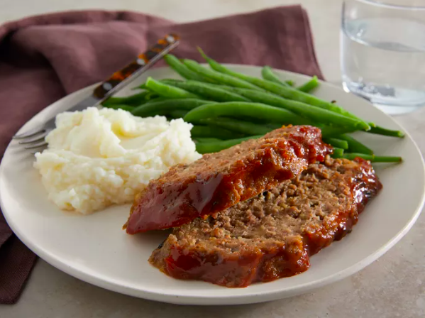

Meatloaf
Go back to the homepage

This is a classic meatloaf recipe that is easy to make and delicious.
Ingredients
- Ground beef
- Breadcrumbs
- Eggs
- Onion
- Spices
Steps
- Preheat the oven to 350°F (175°C).
- In a bowl, mix ground beef, breadcrumbs, eggs, chopped onion, and spices.
- Shape the mixture into a loaf and place it in a baking dish.
- Bake for 1 hour or until cooked through.
- Let it rest for 10 minutes before slicing.
- Serve with mashed potatoes and gravy.